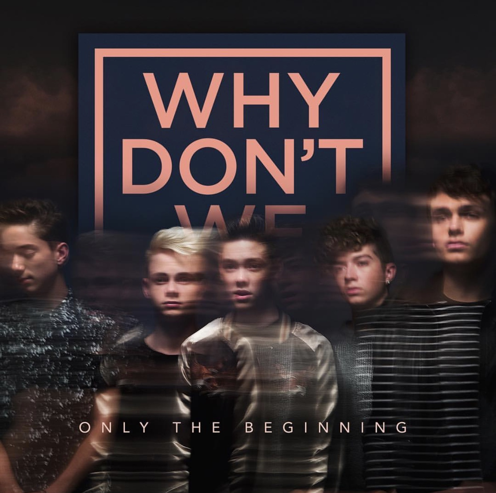
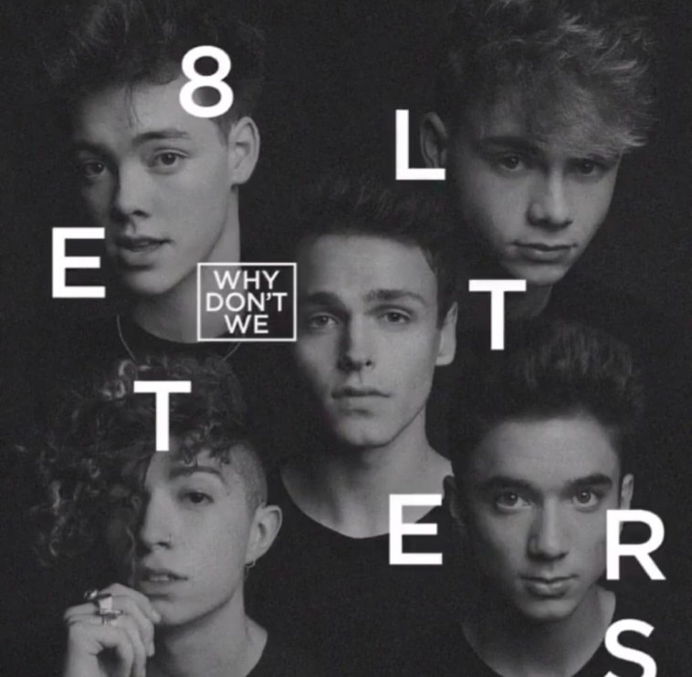
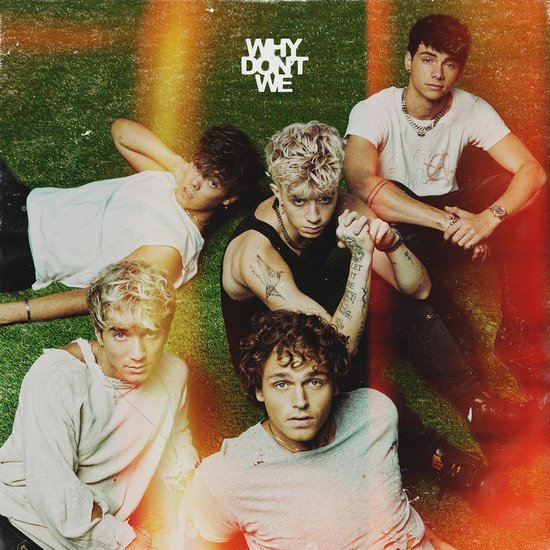

Hun allereerste lied heet 'Taking You'. Taking You heeft meer dan 29 miljoen views op Youtube en kwam uit op 20 oktober 2016. Taking You hoort bij de EP 'Only The Beginning'. Iedereen in de fandom van Why Don't We kent de eerste EP, dit heeft ook te maken dat er een paar liederen van dit EP worden gespeeld wanneer Why Don't We een tour had.
Van 2016 tot 2017 heeft de band vooral liedjes individueel geplubliceerd. Ze hebben wel in deze twee jaren meerdere EP's geplubileerd. EP's zijn te lang om tot een single te behoren, maar te kort om tot een album te behoren. Ze hebben de EP 'Only The Beginning' op 7 oktober 2016 uitgebracht.
Lijstje van de eerste EP tot de laatste EP
- Only The Beginning
- Something Different
- Why Don't We just
- Invitation
- A Why Don't We Christmas
8 Letters
Het allereerste album kwam uit op 31 augustus 2018. Het album heet 8 Letters. Corbyn legde uit dat dit stond voor de woorden 'I love you', die uit 8 letters bestaan. Maar de interpetatie van de 8 letters kan van alles zijn zoals onder andere 8 liefdesbrieven. Deze theorie komt ervan dat in de muziekvideo van '8 Letters' er brieven rond vliegen. Vandaar zijn er genoeg fans van over de hele wereld die geloven dat het kan gaan over liefdesbrieven.
The Good Times And The Bad Ones
Why Don't We heeft eind 2020 bekend gemaakt dat op 15 januari 2021 hun tweede album gaat komen. Het album gaat 'The Good Times And The Bad Ones' heten. Op vrijdag 20 november 2020 heeft de band de naam van de 10 liederen bekent gemaakt via Spotify. Dit is het allereerste album dat de band zelf heeft bedacht en uitgevoerd. Om deze redenen is de album is een hele speciale album voor de band. Hoewel de planning was dat het album, dus inclusief alle liederen, bekent zouden zijn op 15 januari heeft de band op donderdag 17 december 6.00 uur Nederlandse tijd een derde lied van de album bepubliseerd. Hwet lied heet 'Slow Down'. Het eerste lied dat Why Don't We naar buiten bracht was het lied Fallin'. Dit was voordat bekent was dat ook dit lied op de album zou komen. Het tweede lied heet 'Lotus Inn'en in het lied wordt de Lotus Inn verwezen dat het een hotel is. Whty Don't We heeft zelfs een hele website hiervoor gemaakt!